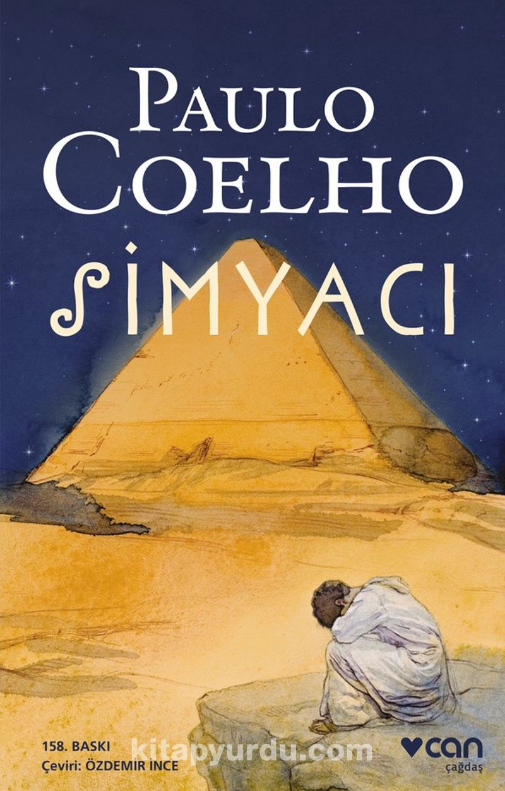

Simyacı, Paulo Coelho tarafından yazılan ve ilk olarak 1988 yılında yayımlanan bir roman. Roman, İspanyol bir çoban olan Santiago'nun Andlar'da bir yolculuğuna odaklanıyor ve onun hayatındaki değişimleri konu alıyor. Roman, Coelho'nun en ünlü eserleri arasında yer alıyor ve dünya genelinde milyonlarca kopya satmıştır.
